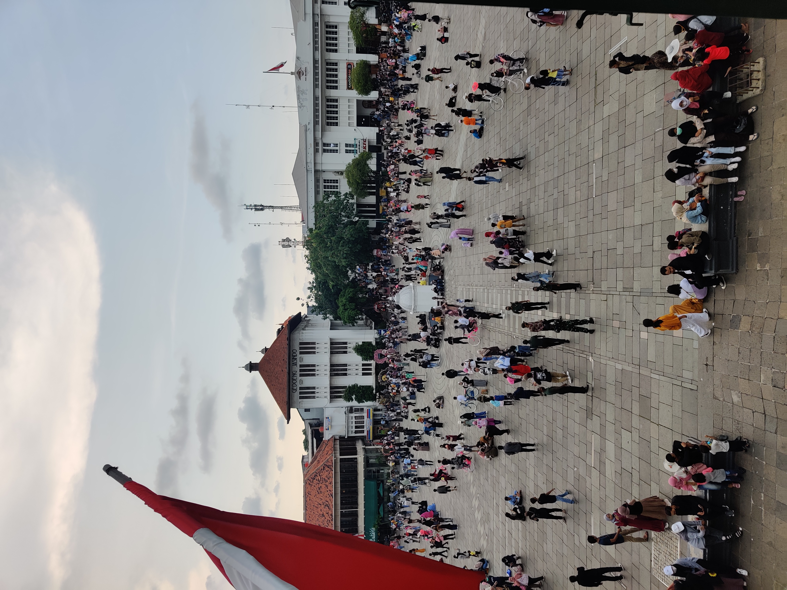
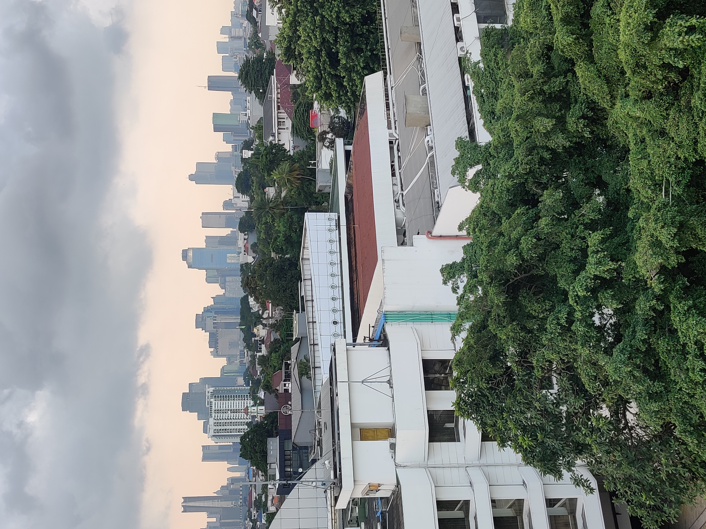
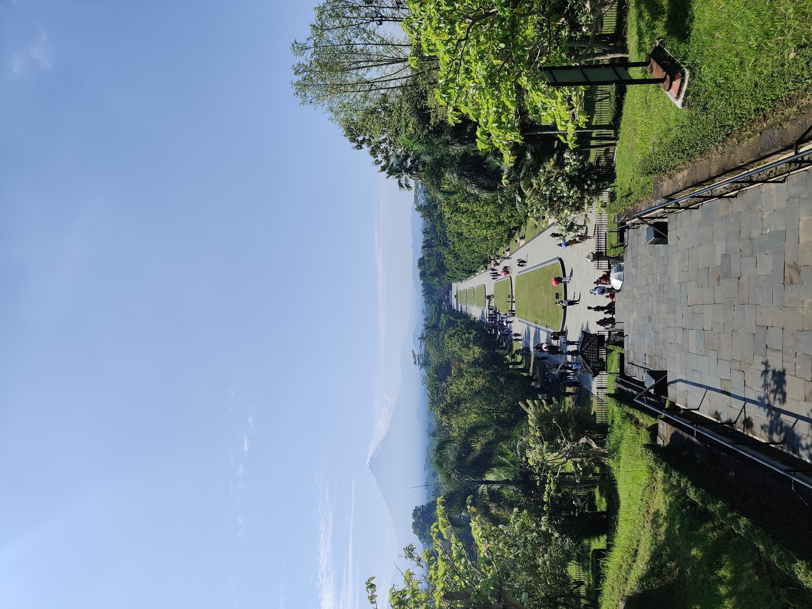

Maplibre
| Mening | Problemen |
|---|---|
| Maplibre is makkelijk te gebruiken en heeft een unieke basemap. Ik vind de kaartviewer erg mooi en geeft een soort atlas achtige sfeer. Ik heb bij MapLibre een custom basemap van MapTiler toegevoegd. | Geen |
|  |  |
Leaflet
| Mening | Problemen |
|---|---|
| Leaflet is de bekendste en in mijn ogen de best beschreven js kaartviewer. Er is veel documentatie aanwezig wat erg helpt met het opzetten van de pagina. Het toevoegen van een GeoJSON ging zonder al teveel moeite. De GeoServer is alleen te zien op mijn laptop, omdat de laag lokaal gehost wordt. | Het toevoegen van de GeoServer was best veel werk. Dit had ik vorig jaar gelukkig gedaan tijdens de lessenreeks. |
 |
 |
ArcGISAPI
| Mening | Problemen |
|---|---|
| De ArcGIS API kaartviewer is erg lastig in gebruik. Het koste flink wat tijd om te leren hoe deze in elkaar zat. De kaartviewer heeft standaard een mooie basemap van ESRI. | Het toevoegen van de WFS is niet goed gelukt uiteindelijk. Na veel uren besteed te hebben om het op te lossen heb ik het voor nu zo gelaten. |
 |
Openlayers
| Mening | Problemen |
|---|---|
| Openlayers is een kaart die heel erg op leaflet lijkt. Ik heb besloten om hier een API te gebruiken voor de basemap. | Openlayers is het probleemkind geweest van deze website. Vorig jaar tijdens het reguliere toetsmoment werkte de viewer goed, maar nu ik aan de herkansing ging werken niet meer. De basis van de kaartviewer was erg veranderd waardoor het lastig werd om zonder Openlayers te downloaden de kaart te laten zien |
 |
 |
De Google Maps Embed was makkelijk te implementeren in de website. Het is een simpele manier om toch een kaart op je html website te laten zien. Je maakt een iframe en voegt een url naar de online kaart toe om de kaart te laten zien binnnen het iframe. Deze stappen zijn terug te vinden in de Google Maps documentatie
De bart chart race heb ik gemaakt met Flourish Studio. Het is een leuke, bewegende visualisatie die de opkomst van Indonesië laat zien qua inwonersaantallen. De chart laat zien hoe snel het bevolkingsaantal stijgt vergeleken met andere landen. Flourish Studio is een fijn programma om te gebruiken voor visualisaties. Je kan in een interface een visualisatie maken die daarbij zelf de code genereert. Ik had zelf veel moeite met javascript dus was dit een fijne oplossing.
Ik heb datawrapper gebruikt een inzicht te geven over de min en max temperatuur in Indonesië op jaarbasis. De grafiek gaat over de minimale en maximale temperaturen per maand. Data wrapper toevoegen gaat met een iframe. Bij Data wrapper gebruik je ook een interface om de code voor de chart te genereren.
Het onderwerp van de website kwam doordat ik vorig jaar rond deze tijd mij aan het voorbereiden was om naar Indonesië te gaan voor buitenlandstage. Om wat meer te weten te komen leek het me leuk een website te maken over het bezoeken van Indonesië.
Technisch was het erg lastig voor mij om de website op te zetten. Ik kan met python redelijk coderen, maar HTML, CSS en JS vind ik niet fijn om te gebruiken. Desondanks was het een goede ervaring toch een website te bouwen met deze talen, om mijn kennis verder te verbreden.
De meeste tijd heb bij mij in de kaartviewers gezeten en de bronnen daarin toevoegen. Als ik in de toekomst nog kaartviewers met JS ga maken gaat mijn absolute voorkeur naar leaflet, omdat ik deze het fijnste vind in gebruik.